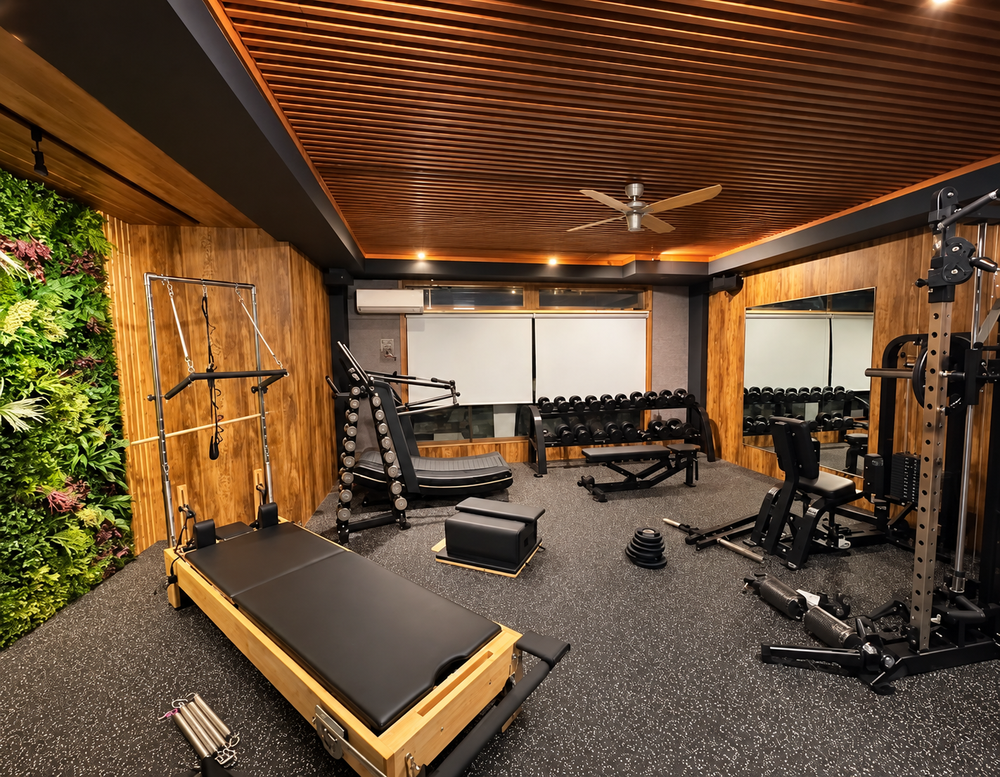
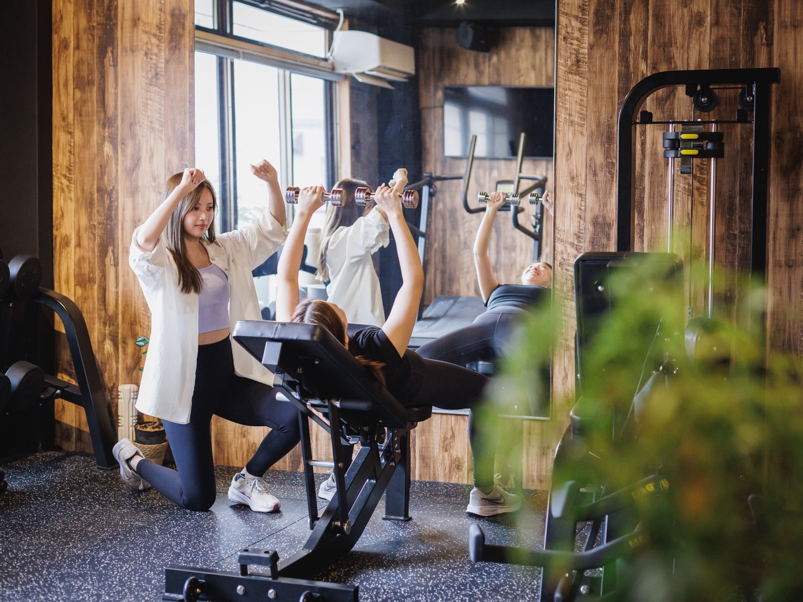
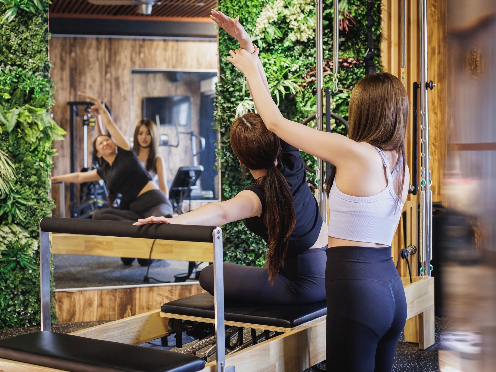
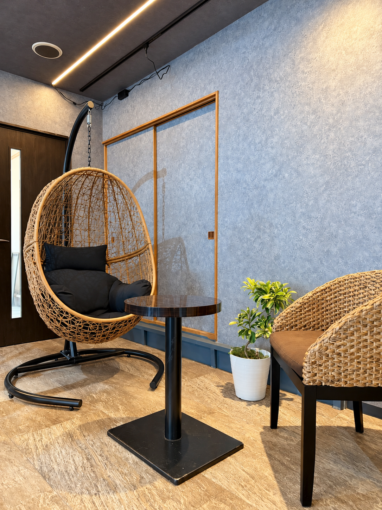
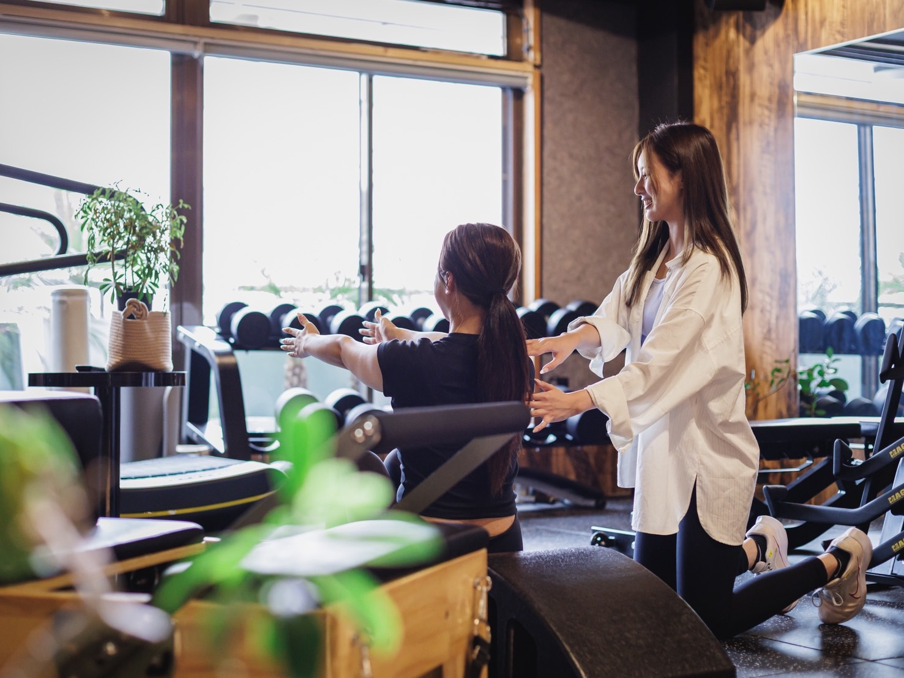

01韓国式マシンピラティス
美しさを追求する「韓国式」メソッド
韓国の美容業界で確立された、ボディメイクに特化したピラティス。専用のマシンを使用し、ただ鍛えるだけでなく、女性らしいしなやかな曲線や、男性の凛とした立ち姿をデザインします。

Korean-style Machine Pilates & Personal Gym Oyama
栃木県小山市の完全予約制
マンツーマンスタジオ
Nature & Harmony



韓国の美容業界で確立された、ボディメイクに特化したピラティス。専用のマシンを使用し、ただ鍛えるだけでなく、女性らしいしなやかな曲線や、男性の凛とした立ち姿をデザインします。

効率的なボディメイクを徹底サポート。必要な箇所をピンポイントで引き締めます。完全予約制の貸切スタジオだから、男女ともに集中力が違います。
「マシンピラティス×筋トレで、しなやかで健康的な体づくりをサポートします！初心者の方も大歓迎です✨」
「お客様一人一人にあったペースで目標達成の為に、楽しく、やりがいの感じる時間を提供致します！ダイエット目的や姿勢改善など多岐にわたりご対応させて頂きます」
期間限定のキャンペーン
入会金 通常 ¥12,000 ⟶ ¥0
カウンセリング + 姿勢・癖チェック + 体験レッスン
¥4,000（税込）
まずはお気軽にご連絡ください。
ご質問や空き状況の確認は、
こちらからお気軽に。
小山ピラティスの魅力や
スタジオの様子を日々発信中。